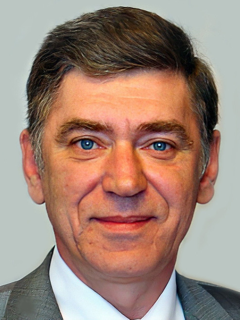

Анатолий Иванович Бобков

Родился 21 июня 1957 г. в г. Енакиево Украинской ССР. Там прошло его детство и школьные годы. В 1972 г. Анатолий окончил школу № 15, а в 1976 г. — Енакиевский металлургический техникум. В августе того же года он получил распре-деление на металлургический завод им. Петрова в Днепропетровске (ныне Днепр), а уже осенью отправился проходить военную службу в г. Балабаново, недалеко от Москвы. Спустя два года он отправился в г. Коммунарск (ныне Алчевск), где начал готовиться к поступлению в горно-металлургический институт.
Со своей будущей женой — Ириной Мартынец — Анатолий был знаком с детства, поскольку они росли в Енакиеве на одной улице. В 1979 г. они решили пожениться. Поскольку к тому моменту Анатолий жил в Коммунарске, а Ирина училась в Орле, подготовка к свадебному торжеству легла в основном на родителей, а вскоре после свадьбы супруги снова разъехались: Ирина вернулась учиться и работать в Орёл, а Анатолий продолжил осваивать профессию металлурга в Коммунарске. Учёба в институте длилась около шести лет. В 1981 г., когда у пары родился сын Денис, супруги всё ещё находились в разных городах, но уже вскоре Ирина получила диплом и перебралась к мужу. Поначалу семья жила в съёмном жилье, чуть позже Ирине предоставили от завода комнату в коммунальной квартире, а к 1985 г., когда родилась дочь Анна, семья уже обосновалась в просторной трёхкомнатной квартире, которую Анатолию предоставили от металлургического завода как молодому специалисту. На Коммунарском заводе Анатолий трудился около семи лет: с 1984 по 1991 г.
В начале 1990-х гг. молодая семья решила вернуться в родной город. Для этого супругам пришлось обменять своё жильё на другую трёхкомнатную квартиру в Енакиеве. После переезда Анатолий перешёл на работу на Енакиевский металлургический завод.
В начале 1994 г. экономическая обстановка на Украине значительно ухудшилась, и Анатолий Иванович был вынужден искать работу в Москве. Там вплоть до выхода на пенсию он работал в сфере коммунальных услуг: сначала как простой дворник, а затем и на руководящей должности. Примерно в начале 2000-х гг. вступил в российское гражданство. После выхода на пенсию в 2010 г. Анатолий Иванович некоторое время работал кладовщиком на жилищно-коммунальном предприятии.
Примерно с 2011 г. и до настоящего момента большую часть времени проводит на даче в д. Меткино, под Москвой. Увлекается радиотехникой и ведением приусадебного хозяйства, следит за состоянием дачи.